Introduction
The
Git Integration for JIRA  add-on is intended for displaying list of commits
linked with particular a JIRA issue. It is often useful to figure out real issue
progress as well as contributors involved in the real work of an issue.
add-on is intended for displaying list of commits
linked with particular a JIRA issue. It is often useful to figure out real issue
progress as well as contributors involved in the real work of an issue.
The Git Integration add-on pulls data from a Git source code control repository. Your JIRA users will be able to see code in Git in context with JIRA projects and issues. Even non-technical users without Git access will be able to work with Git in the familiar JIRA interface.
New tabs are added to the Issue view called Git Roll Up and Git Commits. The Git Commits tab is also added to the Project view. Users who access these tabs will see the Git activities.
to send an e-mail using the default email program to the Git administrator.If you are the Git administrator, define a new Git user for this JIRA server.
Add-on Requirements
Starting from v2.6.0 of the Git add-on, Atlassian JIRA 6.0 or later is required. Support for upcoming Atlassian JIRA 7.0 is introduced starting Git add-on v2.6.24.
Universal Plugin Manager 2.2 or later is required to properly install this add-on.
Getting Started for Git Administrators
For detailed information on this topic, see
Git Integration
for JIRA for Git Administrators .
For information on troubleshooting known errors and issues,
see Git Integration for JIRA - Frequently Asked Questions
.
Installation
If the Git server and JIRA server are installed on the same server, only the path to the Git repository is needed. The URL and the access credentials to the Git server will only be needed if it is located on another server.
If you have Git Integration for JIRA versions 1.03 and lower already installed, see section – Upgrading from Old Versions of the Add-on.
Installation via Atlassian Marketplace
- Go to the Git Integration for JIRA Atlassian Marketplace page.
- Buy or evaluate the add-on with a free 30 day trial.
- Login to your JIRA account, if required, to proceed installation of the add-on. The license key is automatically configured into the add-on configuration for free trial licenses. For purchased license keys, see Managing License Key.

Installation via JIRA Plugin Manager
- In JIRA, go to Administration > Add-ons. The Find New Add-ons page is
displayed.
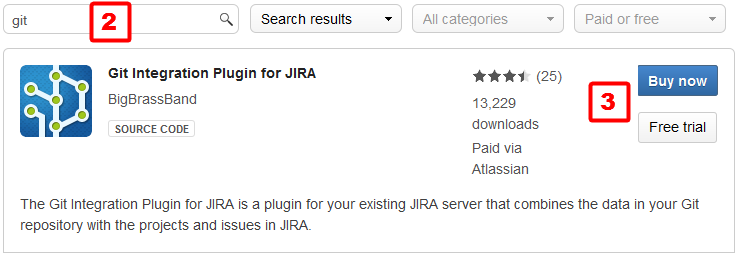
- Search the Marketplace with 'git' search phrase.
- Buy the add-on or start the free trial for 30 days.
- Login to your JIRA account, if required, to proceed installation of the add-on. The license key is automatically configured into the add-on configuration for free trial licenses. For purchased license keys, see Managing License Key.
Manual Installation
Use manual install if you have a specific version of Git Integration for JIRA downloaded from the marketplace or sent by some other file sharing method:
- In JIRA, go to Administration > Add-ons > Manage Add-ons.
- Click Upload Add-on and navigate to the
jar file that you already have.
- Click Upload. Restart your application for changes to take effect.
- Buy the add-on or start the free trial for 30 days.
- Login to your JIRA account, if required, to proceed installation of the add-on. The license key is automatically configured into the add-on configuration for free trial licenses. For purchased license keys, see next section.
Managing License Key
Go to the Git Integration Plugin for JIRA add-on configuration (Manage Add-ons).
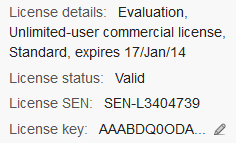 Click the Edit icon to enter/change the
License key.
Working with SSH Keys
SSH keys are required in order to provide secure connection with the remote git host specified in the Repository Origin field. The add-on uses one set of keys for accessing all configured repositories.
There are two options available for specifying SSH keys:
- SSH keys stored on server filesystem are located in the home folder of the user which account is used to run JIRA. This option provides better compatibility with installation of the previous versions of the add-on. This option does not support passphrases.
- SSH keys are stored in the add-on configuration. Keys are added using the add-on configuration. This option supports passphrases.
List of SSH Keys
Both types of SSH keys are displayed on the SSH Keys tab. Legacy filesystem-based keys contain directory path in the Private key column.
The SSH keys are also automatically added to this list when adding new repositories that
require SSH keys.
Public Key and Private Key with SSH
Generated ssh keys always come in pair. (Example: id_rsa.pub and
id_rsa)
For establishing safety connection with SSH, upload a Public Key to the SSH server and set the Private Key to the SSH client.
Take note that the SSH server is the Git server and the SSH client is the JIRA server.
- Git server — Public Key
- JIRA server — Private Key (Git Integration Plugin for JIRA > SSH Keys)
Generating SSH Keys
Configure and generate SSH keys for the following git hosting systems by following the reference links on each sub-section:
Beanstalk
- For OS X, see Working with Git on OS X .
- For Windows, see Working with Git on Windows .
- For Linux, see Working with Git on Linux .
Github
- For OS X, see Generating SSH Keys on OS X .
- For Windows, see Generating SSH Keys on Windows .
- For Linux, see Generating SSH Keys on Linux .
Bitbucket
- For OS X/Linux, see Setting up SSH for Git on OSX/Linux .
- For Windows, see Installing Git - Step 1 then Set up SSH for Git .
Git-scm (Windows)
- See reference, Installing Git for OSX/Windows/Linux .
- For creating SSH keys, see Generating SSH Public Key .
GitLab
- See reference,
Installing Git for OSX/Windows/Linux .
- For creating SSH keys, see Generating SSH Public Key . Also see the video demonstration
here.
Gitolite
- For full reference and installation, see All About Gitolite .
- For information on SSH on Gitolite, see SSH and Gitolite .
- For details on user key management, see Managing User Keys in Gitolite .
Gerrit
By v2.6.1 of the Git add-on, the Gerrit web linking support is added.
- For information about Gerrit software, see Gerrit Software Wiki and Gerrit at Code Review .
- For general reference and installation, see Gerrit documentation . Ubuntu installation and fixing registration error.
- For information on SSH on Gerrit, see SSH and Gerrit .
- For details on User Change-Ids, see Change-Ids in Gerrit .
GitBlit
- For information about Gitblit, see GitBlit .
- For general reference and installation, see GitBlit Configuration , Using HTTP/HTTPS Transport and Built-in Authentication.
- For information on SSH on GitBlit, see GitBlit: Using the SSH Transport .
- For GitBlit related FAQ, see GitBlit Frequently Asked Questions .
Team Foundation Server
The SSH support starts with TFS 2013 and later versions.
- For information about Team Foundation Server, see
MS Team Foundaton Server .
- For general reference and installation, see
Application Lifecycle
Management. - For information on SSH on TFS, see
How to create a Public/Private Key
Pair.
Adding a SSH Key
Go to
Administration >
Add-ons. Click Manage Add-ons on the sidebar. Under
Git Integration Plugin for JIRA, select SSH Keys.
| Column | Description |
|---|---|
| Name | Name of the added SSH key |
| Private key | This is the SSH key in hex mode. |
| Passphrase | Defines true if the SSH key has a passphrase. |
| Associations | Lists the associated repositories with this SSH key. |
| Last Used By | Defines the repository that is using this SSH key. |
| Operations | Click the icon to perform Delete and Associations functions. |
Click Add SSH Key to configure the SSH key. The following screen is displayed:
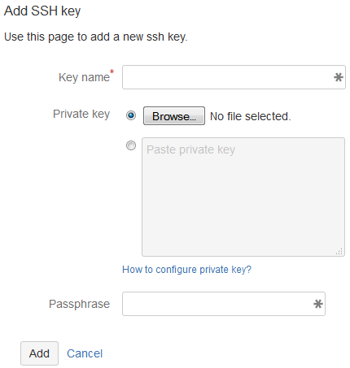
Utilize the following options for the new SSH key:
| Option | Description |
|---|---|
| Name | Enter a meaningful name for this private SSH key. |
| Private key | This is the actual private SSH key. Paste private key from clipboard or load from a private key file. |
| Passphrase | Optional. Enter the passphrase that you have assigned to this private key. |
Associating a SSH Key to a Repository
Limit the usage of the SSH key only to the selected repositories. As of v2.6.9 of the Git add-on, the option to strictly map keys to repositories is available.
On the SSH Keys page, click
Actions > Associations for
the selected SSH key.
The following screen is displayed:
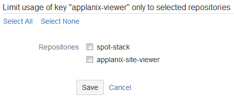Mark the required repository or repositories to associate the SSH key.
Clicking the Select All text label marks all repositories that will be associated to this SSH key.
Clicking the Select None text label deselects all repositores.
Click Save to save the settings.
If you have multiple repositories that uses the same SSH key that you want to connect with the Git add-on, you need to:
- Configure a repository that requires an SSH key via Add Repository Wizard.
- Associate that SSH key with currently configured repository via SSH Keys.
- Add another repository that requires the same SSH key. You will be presented with the following screen: 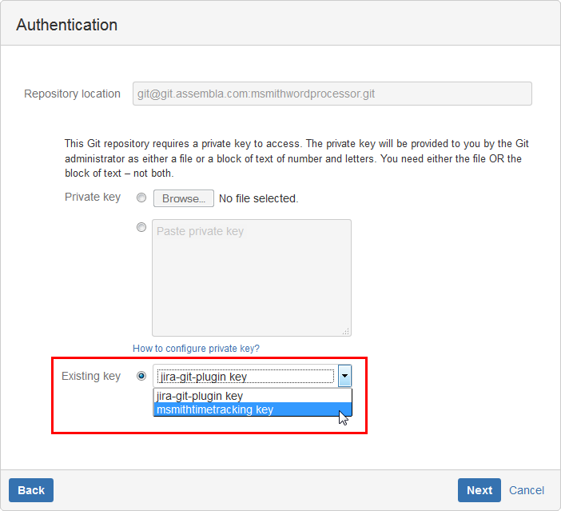
- Select the SSH key that you have associated to the previously added repository from the Existing key list.
- Click Next to continue. Complete the wizard and add another repository as desired.
Removing SSH Keys
SSH keys cannot be modified or updated. To change the keys, remove and add them again.
Reconfigure Git Repository and SSH Key
Perform the following steps to reconfigure repositories and SSH key:
- Remove any old SSH keys configured with the Git add-on via
<JIRAHOSTNAME> /secure/ViewSshKeys.jspa - Restart JIRA.
- Get the following file from your JIRA server to your Windows workstation:
/home/jira/.ssh/id_rsa - Set up the git repository in JIRA using the repository location and upload the private key that was downloaded above.
For multiple repository configuration, see Bulk Change.
Git URL Ports
If your JIRA and Git servers are running through a firewall, configure the firewall to allow access using the URL schemes for git repositories. For authentication issues, make sure to check first the correct port for its connection.
Below are the default ports for common git URL protocols:
| Protocol | Default Port |
|---|---|
| ssh:// | port 22 |
| git:// | port 9418 |
| http:// | port 80 |
| https:// | port 443 |
Test git connection and repository URL by doing the following:
- Install git client (or run
sudo apt-get install git) - Place your ssh key into
~/.ssh - Clone the repository (or run
git clone <your_repository_url>)
Setting Up Repositories
Setup repositories and manage them in the add-on configuration in JIRA.
Using the Add Repository Wizard
Go to
Administration >
Add-ons > Git Integration Plugin for JIRA
> Git Repositories.
Click Connect to Git Repository. The Add Git Repository wizard is displayed.
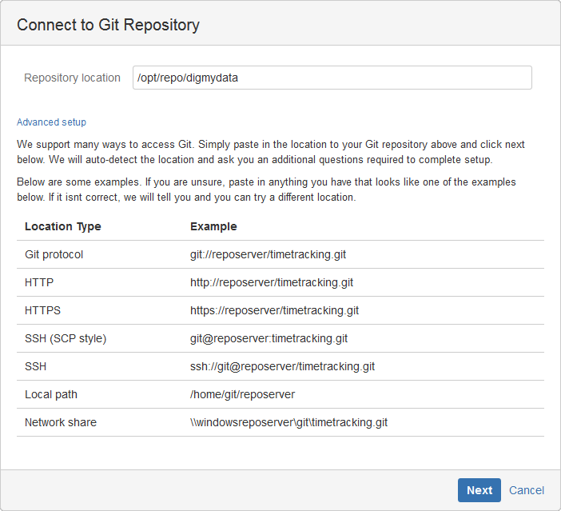Enter required repository location.
Click Next. The wizard will automatically detect the entered repository location type.
Starting v2.6.7 of the Git add-on, the default identities are not used and the repository is created without the additional key upload.
Repository Browser Setting
In the Repository Browser screen, enable or disable the Git Viewer feature as required.
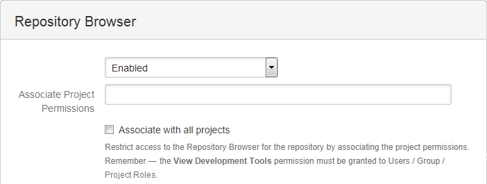Enter available projects as required in the Associate Project Permissions field or check the Associate to All projects checkbox to associate all projects.
Click Next.
HTTPS Authentication
If the entered git host requires http credentials, the following screen appears:
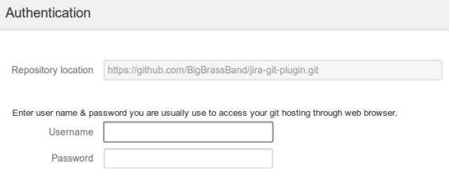Provide Username and Password in the respective fields then click Next to continue.
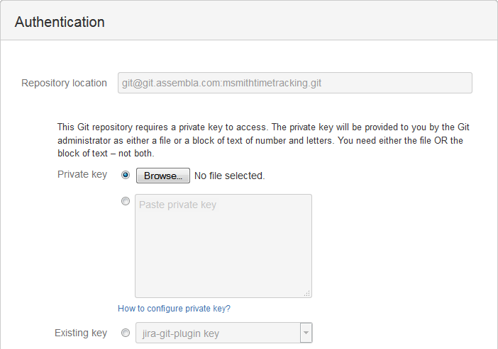Configure the required SSH private key by navigating to the private key file or pasting the private key text into the pastebox.
Click Next to proceed.
Passphrase Input
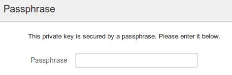
Enter the Passphrase, if required. Click Next to continue.
After the above requirements are fulfilled, the wizard will:
- create a local copy of the git repository; and
- index the git repository to build change history.
Click Finish to close the wizard. The newly added repository appears on the git repositories list of the add-on.
Adding a Repository via Advanced Setup
Use the Advanced setup, if you have set up the Git repository ahead of time outside of the JIRA Git add-on. Configure repositories via Advanced setup in order to manage advanced options.
Open the Add Git Repository wizard then click the Advanced Setup label.
The Connect to Git Repository screen is displayed.
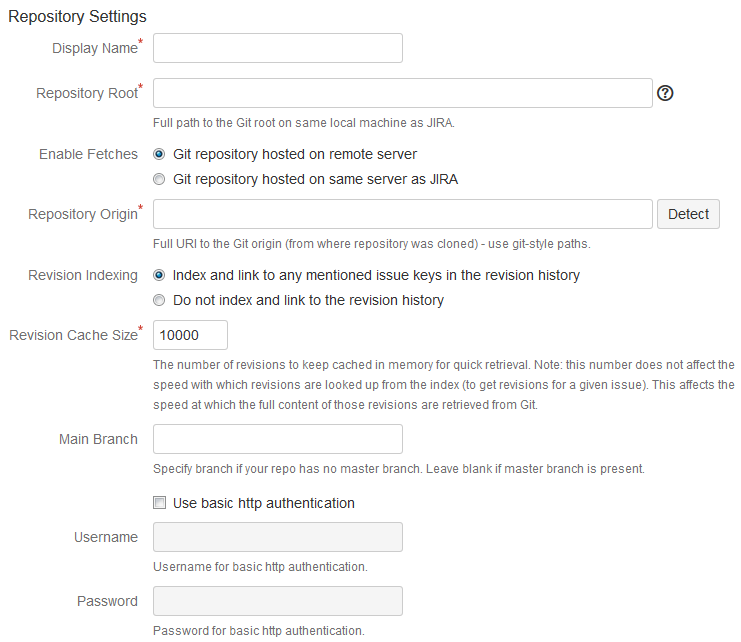
Enter the required information.
Utilize the following options for adding new git repositories:
| Repository Settings |
| Repository Root – This is the local path to the repository on the server where your JIRA service is running. This will point the Git add-on to a clone of the repository hosted locally with JIRA. |
| Enable Fetches |
|
Git repository hosted on remote server In this mode, fetches are enabled using any external source. The reindex background service will initiate the fetch then add the new commits to the plugin index. |
|
Git repository hosted on same server as JIRA Fetches are enabled when the repository is hosted locally. In this mode, no fetches are made. The reindex service runs in the background and process every new commit found. |
| Repository Origin – This is
the URL to the hosted git service used on the project. For example, you might host your repository on GitHub, Beanstalk or your own server.
The repository origin may not be hosted on the same server as JIRA.
|
| Revision Indexing – This option turns on the memory cache which is used when list of commits are displayed. |
| Revision Cache Size – This is the size of the memory cache. If some particular commit is not cached, it is fetched from the Lucene index which involves some disk activity. |
| Main Branch – Specified branch will intend to organize the git commit tab. A commit will not be shown in other branches if it is a part of the main branch. By default, "master" will be used if a main branch is not specified. |
| Use basic http authentication – Most git hosts provide http access to git repositories. Enter required credentials to configure basic http authentication to remote git repositories. |
| 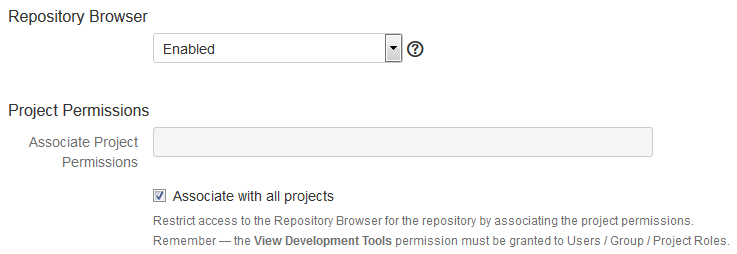 |
| Repository Browser |
| Enables or disables the Git Viewer feature for this repository. The default setting for this option is Enabled. Users must have the View Development Tools project permission in order to use this feature. Consult your JIRA System Administrator on permissions. For more information, see section, The Repository Browser. |
| Project Permissions |
| Associate Project Permissions – One or more
projects must be mapped to this repository to make Git Code Review
and Git Commits tabs available in the Issue screens of the associated
projects.
This field requires at least one existing project if the Repository Browser
for this repository is enabled.
|
| Associate with all projects – Enable this option to associate this repository to all projects. Disable this option if you want to use existing mapped projects from the Associate Project Permissions field. The default setting is enabled (checked). |
| 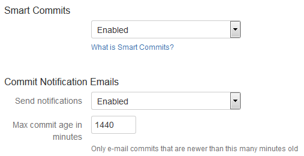 |
| Smart Commits |
|
See section,
Smart Commits. This setting is enabled by default (as of v2.6.3 of the Git add-on). |
| Commit Notification Emails |
| Send notifications – Enables or disables commit notification emails for this repository. |
| Max. commit age in minutes – Set the desired value in minutes, as to when commit notifications will be sent. Commit notifications will be e-mailed if the age of the commit is less than or equal to this value. |
| Weblinking |
| See section, Weblinking. |
Click Add to save the settings. The newly added repository appears on the git repositories list of the add-on.
- Go to Git Repositories configuration then create/edit a repository.
- Under Commit Message Validation, set/unset Require JIRA issue key in commit messages.
- Click Save/Update to save changes.
Setup Repository Root Not Located in JIRA Home Directory
There are three possible ways to setup a repository root that is not located in the JIRA home directory:
- Clone the repository outside of JIRA then connect to it via Connect to Git Repository > Advanced Setup.
- Clone the repository with the standard Connect to Git Repository Wizard into the JIRA home directory. Soon afterwards, move the cloned repository and update the settings on the repository.
- You could symlink the
{$JIRA_HOME}/data/git-plugindirectory to a different volume. The standard Connect to Git Repository Wizard will still write there, but the data will reside on the different volume.
Editing a Repository
Go to
Administration > Add-ons >
Git Integration
Plugin for JIRA > Git Repositories.
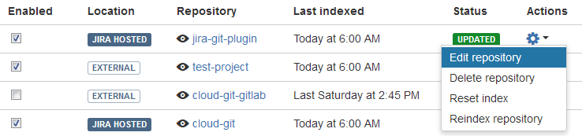
Enable/disable a repository by clicking the checkbox under the Enable column of the selected configured repository.
Click Actions >
Edit repository to modify repository settings. See
Adding a Repository via Advanced Setup for detailed information on the option fields.
Click the view icon to see repository details:
| Setting | Description |
|---|---|
| Status | This is the repository status. It shows if Repository Root is configured correctly and the JIRA instance can access it. |
| Last Indexed | This is the date and time when synchronization was last executed. |
| Repository Root | See Adding a Repository. |
| Repository Origin | See Adding a Repository. |
| Changeset, File Added, File Modified, and File Deleted formats | Displays the weblinking format strings (if set in the repository weblinking configuration). |
Managing Add-on Settings with Git Repositories
The following Actions are available in managing add-on configuration with the git repository:
| Action | Description |
|---|---|
| Edit repository | Edits the Git repository add-on configuration. |
| Delete repository | Deletes the Git repository add-on configuration. |
| Reset index | Clears the last indexed revision and rebuild Lucene index on next synchronization. |
| Reindex repository | Immediately starts the synchronization with the selected repository. |
Removing a Repository
Delete a repository if it isn't needed or is broken in the Git Plugin configuration.
- Go to Administration > Add-ons.
Under Git Integration Plugin for JIRA,
select Git Repositories.
- Click Delete repository under the Actions column for the selected repository.
- The confirmation screen is displayed. Uncheck the Delete repository files... option to retain git repository files in the displayed path or leave it checked to also delete the repository files from the displayed path.
- Click Delete to remove the repository. Click Cancel to abort this process.
Bulk Change
The Bulk Change feature provides an easier way to import or export repository configuration.
Exporting Repository Configuration via Bulk Change
The bulk export function allows JIRA administrators to create a backup copy of the Git ad-on repository configuration into a tab-delimited file.
- Go to Administration > Add-ons.
Under Git Integration Plugin for JIRA,
select Git Repositories.
- Click Bulk Change
then select
Export Configuration.
- Click Download to save the current configuration of your repositories to a specified location.
For detailed instructions on importing multiple repositories in the Git add-on configuration, click on the Detailed instructions label or follow the steps in the next section.
Adding Existing Repositories via Bulk Change
For administrators who have several repositories, the Git add-on allows you to import multiple repository configuration using a .tsv file. This will make managing large Git repository lists more efficient.
- Click Choose File... on the Import repository configuration screen. Navigate to the location of the .tsv file then click Open.
- Click Upload to start the import process.
The Git add-on will read the list from the file, detect the existing configured repositories, and automatically update its settings. If an error is found, it will be displayed in the message log on the import screen and in the Status column on the repository configuration list. Make the required changes to correct the errors on the affected rows and redo the upload.
Adding New Repositories via Bulk Change
Download the template file. Follow the above section if you already have the .tsv file ready for import:
- Go to Administration > Add-ons.
Under Git Integration Plugin for JIRA, select Git Repositories.
- Click Bulk Change then select
Import Configuration.
The following screen is displayed:
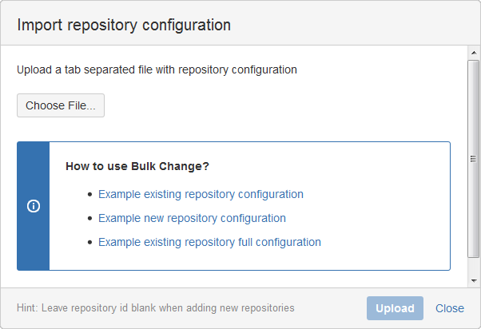Click one of the links under How to use Bulk Change? to download the template file.
Editing Existing Repositories in the TSV File
- Navigate to the .tsv file and edit it with your favorite spreadsheet program.
- This field accepts list of comma separated
project IDs for project mapping. Trailing spaces are ignored (equivalent
to unchecking the Associate to All Projects checkbox in the
Advanced Setup dialog).
Example: 10000,10100
- If you change an existing repository, leaving this field blank will use the existing values of the repository configuration.
- Setting this field to ALL will retain projectMapping settings and sets "All Projects" flag to true (equivalent to checking the Associate to All Projects checkbox in the Advanced Setup dialog).
- The header row is required.
- The order of fields specified in the header row – is the order of the fields in the following rows.
- If a field is omitted from the header row, the Git add-on will use the default value for a new repository. The Git add-on will keep the current value of a repository if it already exists in the configured repositories.
- If a repository is not listed in the .tsv file, no changes will be made if the same repository exists in the add-on configuration.
- Save the file to a tab-delimited format:
- OSX users – select all data in Numbers and then paste into a text editor and save. Name the file with the .tsv extension (repo-example-00.tsv).
- Excel users - save the file as Text (Tab delimited) (*.txt). Rename file's .txt extension to .tsv.
- Google Drive - upload the file to this service. Right click the .tsv file then open it with Google Sheets. Make the necessary changes then go to File > Download as > Tab separated values (.tsv) to your local machine.
Populate/edit the fields by utilizing the following options:
| Column/Field | Description |
|---|---|
| id | Assign an ID number to a repository. This is
required if you wish to update or edit existing repositories by setting
this value to their equivalent IDs. If this field is left blank, the
repository will be created as new.
When importing to a new server, the "id" field must be blank.
|
| root | Optional on existing servers. See Repository Root in section,
Adding a Repository via Advanced Setup.
The "root" field may refer to an existing
repository on a new server. If "root" doesn't exist, this field must be blank.
|
| origin | Required. See Repository Origin in section, Adding a Repository via Advanced Setup. |
| displayName | Optional. Define a meaningful name for this repository configuration. If this field is left blank, the default value is obtained from the origin. |
| enableFetches | Optional. See Enable Fetches in section, Adding a Repository via Advanced Setup. The default boolean value for this field is true. |
| revisionIndexing | Optional. See Revision Indexing in section, Adding a Repository via Advanced Setup. The default boolean value for this field is true. |
| revisionCacheSize | Optional. See Revision Cache Size in section, Adding a Repository via Advanced Setup. The default value for this field is 10000. |
| mainBranch | Optional. See Main Branch in section, Adding a Repository via Advanced Setup. |
| username, password | Optional. See Use basic http authentication in section, Adding a Repository via Advanced Setup. |
| gitViewerEnabled | Optional. Setting this field to true will enable the Repository Browser feature for the configured repository. The default value for this field is false. |
| projectMapping | These are numeric projects IDs associated with the repository. When you
create a new repository and set the field gitViewerEnabled
to true, at least one project
must be associated with it.
If projects are not associated to the repository, you must leave this field blank
and set the gitViewerEnable
field to false. |
| smartCommitsEnabled | Optional. See the Smart Commits section. If left blank, the default value for this field is true. |
| sendCommitEmails | Optional. Set commit notification emails for this repository. If left blank, the default value for this field is true. |
| maxMinsToCommitEmail | Optional. Set the desired value in minutes, as to when commit notifications will be sent. Commit notifications will be e-mailed if the age of the commit is less than or equal to this value. Default value is 1440 minutes. |
| changesetFormat, fileAddedFormat, fileModifiedFormat, fileDeletedFormat | Optional. See the Web Linking section. |
| disabled | Optional. Add this repository into the Git add-on configuration and set its status to updated (enabled) or disabled. If left blank, the default value for this field is false. |
| delete | Optional. Set "delete" on this column/field as a confirmation to the Git add-on to automatically remove the selected repository from the plugin configuration. If left blank, no changes will occur. |
Take note that the .tsv file is verified by the Git add-on with the following rules:Removing Existing Repositories via Bulk Change
To delete multiple repositories from the add-on configuration:
- Open the existing .tsv file that you want to use for this process. See the previous section for more information.
- Under the delete column, enter "delete" for each repository that you want to remove.
- Save this file and upload it via Bulk Change > Import Configuration.
Bulk Change Automation
To automate the bulk change process via script, see
Post Bulk Change API .
Commit Email Notifications
Permissions
The user must have the following permissions to get notifications:
- developer access for the project
- developer access on at least one project which is mapped to the repository
- developer access on at least one project and the repository is mapped to all projects.
Settings
Access the settings for this feature via:
- Git add-on General Settings.
- Connecting to a Repository > Advanced Setup and Edit Repository screens.
- JIRA User Profile > Git Integration for JIRA preferences > Git
Commit Emails.
This setting allows an individual user to receive or to stop receving any of the notification emails.
Watching
The user will get notifications when watching an issue or repository. The user will receive repository commit notifications if that repository is being watched by the user. If the user watches an issue, any commit related to the issue will be sent to that user as notifications.
User Profile Settings
By default, JIRA email notification format is text-only.
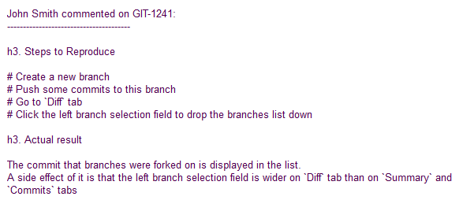You can change this setting to HTML by
going to User Profile > Preferences. Click the Edit
icon.
The following dialog is displayed:
![[User profile update pref settings]](docimgs/image058.png)
Change the Email Type to HTML. Click Update to save the changes. The email notifications that you receive will now be in HTML format.
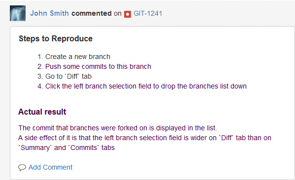
The user will get notifications from own commits if the My Changes setting in
the User Profile > Preferences is set to Notify me.
View Git Clone URL and How to Cache HTTP Credentials
Many git users are having trouble locating a git repository's location information for cloning as well as other common git functions.
The Clone Repository link is added to the following locations in JIRA:
- under Git Source Code in the panel on the right
- on the Git Commits tab
- on the Git Code Review tab
- the Git menu (Repository Browser menu) - Clone Repository menu item. This only appears when the screen has a project context - such as when viewing an issue or the project summary.
Click the Clone Repository text link to open the Git Repository Connection Information dialog. This dialog displays Git clone URL information, command line git client version requirement, instructions on cloning the repository and password caching.
General Settings
Change Git add-on settings in the Add-on Management page (Applications page in JIRA 7) to show/hide the Git Code Review and Git Commits issue tabs.
Starting v2.5.9 of the Git Add-on, the option to enable/disable Git Code Review
and Git Commits issue tabs has been moved to the Add-on Management >
Git Integration Plugin > General page.
Go to Administration > Add-ons.
Under Git Integration Plugin for JIRA,
select General.
| Git Roll Up Issue Tab |
| 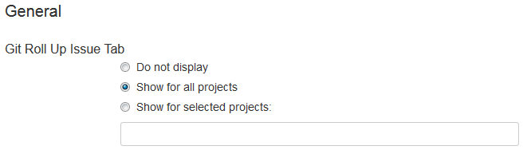 |
| Do not display – This tab is not displayed on the Issue screen for all JIRA projects. |
| Show for all projects – This tab will be displayed on the issue screen for all JIRA projects. |
| Show for selected projects – This tab will only be displayed on selected projects. Define one or more required projects into the textbox. |
| Git Commits Issue and Project Tabs |
| 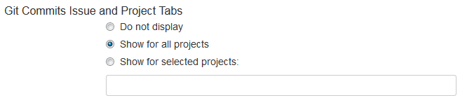 |
| Do not display – This tab is not displayed on the Issue and Project screens for all JIRA projects. |
| Show for all projects – This tab will be displayed on the issue and project screens for all JIRA projects. |
| Show for selected projects – This tab will only be displayed on the issue and project screens on selected projects. Define one or more required projects into the textbox. |
| Git Code Review Issue Tab |
| 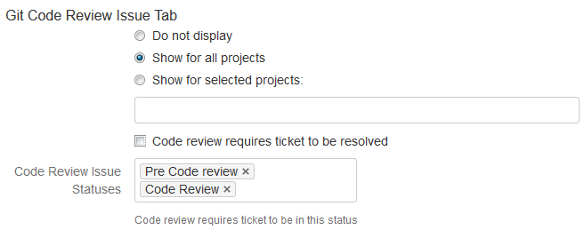 |
| Do not display – This tab is not displayed on the Issue screens for all JIRA projects. |
| Show for all projects – This tab will be displayed on the issue and project screens for all JIRA projects. |
| Show for selected projects – This tab will only be displayed on the issue screen on selected projects. Define one or more required projects into the textbox. |
| Code review requires ticket to be resolved – Enabling this option will require the issue to be set to Resolved status before it can be set to the Code Review status. |
| Code Review Issue Statuses – Select one or more issue statuses to set in the provided textbox. Click the textbox to view available status options. |
| 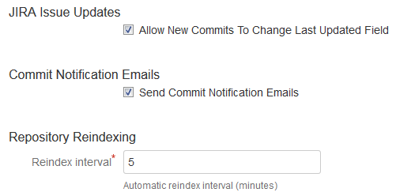 |
| JIRA Issue Updates |
| Enable/disable the setting to allow new commits to change the Last Updated field. Default is enabled. For more information about this setting, see section Reindexing – Reindex and updatedDate Filter. |
| Git Activity Stream |
| Enable/disable the setting whether to show git commits in the JIRA activity stream
(Issue page or dashboard widget) or not. For in-place upgrade of the Git add-on, this setting is turned off by default. For new installation, the default setting is enabled. |
| Commit Notification Emails |
| Enable/disable the setting to allow sending of email notifications when a commit is made. This setting defaults to OFF for Git add-on upgrades and ON for new installation of the Git add-on. |
| Repository Reindexing |
| Reindex interval – Set the automatic reindex interval frequency value in minutes as required. Default value is 5 minutes. |
| Configuration of the scheduler jobs are no longer accessible in the JIRA administration page. For this case, the Git add-on offers JIRA administrators this capability via the General screen. Minimum value is 1. Maximum value is 2147483647. Only whole numbers are allowed. |
| Repositories Garbage Collection checker |
| These settings control Git repositories garbage collection. Garbage collection process will prune all loose objects, pack loose references and repack all reachable objects into new pack files and remove the old ones. |
| 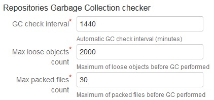 |
| GC check interval – Set the number of minutes that will elapse before a repository is checked to see if it should be garbage collected. The default value is 1440 minutes. |
| Max loose objects count – Set the maximum number of loose objects that will be checked before the garbage collection is triggered. The garbage collection is activated if the number of loose objects exceeds this setting. Loose objects are single items that are not compressed into a Git pack file. The default value is 2000. |
| Max packed files count – Set the maximum number of packed files that will be checked before the garbage collection is triggered. If the number of packed files count exceeds this setting, the garbage collection is activated. The default value is 30. |
Click Save to apply the changes.
Web Linking
The web linking feature adds links to your git hosting provider directly into the Git Commits tab. Configure web linking options while adding/editing repository settings so that commits can include links to the git host pages.
The following providers are supported:
- Beanstalk
- BitBucket
- BitBucket Server
- cgit
- CloudForge
- Fisheye
- Gerrit
- Gitblit
- GitHub
- GitLab
- Gitorius
- Gitolite
- gitweb
- Microsoft Team Foundation Server (starting v2013)
- Atlassian Stash
Select a git host from the Web Link list. The web linking input box options are
automatically filled out with corresponding variables for the selected git host. Change
the variables according to the actual URL settings of the git host. Configure server and
port and ${rev} will be substituted based on the commit ID.
You can create several custom configuration to support other git hosting providers. The following five URLs should be configured for setup:
| Option | Description |
|---|---|
| ChangeSet Format | This is the URL used to display revision. Use the following variable: $(rev) - git revision |
| File Added Format, File Modified Format, File Deleted Format |
This is the URL to display content of added, modified or deleted
files. Use the following variables:
|
| View Format | Optional. This URL is unused. |
Any Git host that is accessible via SSH, HTTP, HTTPS, git protocol, local and network share is supported.
Once properly configured, the Git Commits tab on the Issues page will display as follows:
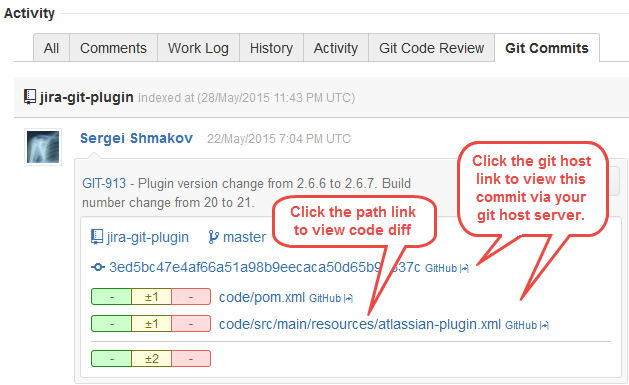
Disabling Source and Commits Tabs
The Source tab is part of the FishEye Plugin and is used for integration with SVN. The Commits tab is part of the JIRA DVCS Connector Plugin and is used for integration with gits (Git, Mercurial, BitBucket etc.).
Attlassian enables these tabs by default.
To hide the Source tab from the Issues page, disable the FishEye Plugin:
- Go to
Administration > Add-ons
> Manage Add-ons.
- Find and click
FishEye Plugin under the installed add-ons to expand its options.
- Click Disable.
To hide the Commits tab from the Issues page, disable the JIRA DVCS Connector Plugin:
- Go to
Administration > Add-ons
> Manage Add-ons.
- Find and click
JIRA DVCS Connector Plugin under the installed add-ons to expand its options.
- Click Disable.
Linking Git Commits to JIRA Issues
To create a link between your Git commit and a JIRA issue, developers must include the issue key into the commit comment.
For example, the "GIT-50 fixed issue" comment – this assumes that you have configured a JIRA project with the key 'GIT' and someone has created the issue #50 within this project.
Commits are selected by issue key. Developers should add them to comments every time the commits are made.

Example Git commit message: "GIT-913 - Plugin version...". In this case, "GIT-913" is the issue key linking the commit message to the JIRA issue.
Smart Commits
Smart commits allows your team to perform actions on JIRA issues from a single commit. Users can enter the issue key and the desired action such as time tracking or closing an issue.

The Git Integration add-on supports smart commit by adding a simple syntax to a commit message.
Smart Commits configuration checklist:
- The JIRA DVCS Connector Plugin is not required.
- Your JIRA e-mail address and Git commit e-mail address matches
- E-mail address is not shared by other JIRA users
As of v2.6.3 of the Git add-on, the smart commit processing is active by default and can be enabled/disabled via the repository configuration:

Examples:
| Syntax | Description |
|---|---|
<ISSUE_KEY> #<command> |
A single action on a single issue.
Example:
TEST-100 #time 2w 1d 4h 30m
Records the specified #time to the issue, TEST-100.
|
<ISSUE_KEY> #<command1> |
Multiple actions on a single issue.
Example:
TEST-100 #time 4h 30m #comment Fixed code #resolve
Logs specified #time to the issue, TEST-100; adds the #comment and resolve the issue.
|
<ISSUE_KEY1> <ISSUE_KEY2> <ISSUE_KEY3>
#<command> <optional command_params> |
A single action on multiple issues.
Example:
TEST-100 TEST-101 TEST-102 #resolve
Resolves specified issues.
|
<ISSUE_KEY1> <ISSUE_KEY2> ... <ISSUE_KEYn>
#<command1> <optional command1_params> |
Multiple actions on multiple issues.
Example:
TEST-100 TEST-101 TEST-102 #resolve #time 2d 4h #comment Fixed code
Resolves specified issues; logs specified #time and adds #comment against the issues.
|
Starting v2.6.33 of the Git Integration for JIRA, support for multi-line commit messages for Smart Commits has been implemented. The following examples shows correct usage of the Smart Commit message:
TST-1 implemented feature 1 TST-1 #comment some comment in JIRA on several lines TST-1 #resolve TST-2 #time 1h 30m
In this example, an issue key that is present on every line is a valid multi-line commit message.
TST-1 implemented feature 1 #comment some comment in JIRA on several lines #resolve TST-2 #time 1h 30m
This is the equivalent smart commit message based from the above example.
TEST-3 Background color of settings should be lighter TEST-3 #in-progress #time 1h TEST-4 resolve TEST-2 #resolve
This example, containing several issue keys, is also a valid multi-line smart commit message.
To test smart commits:
- Open an issue and view the workflow from the context of the issue.
- Hover a status. 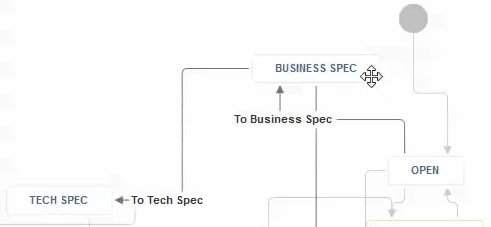
When you hover a status - it will highlight available transitions. This is the transition name that is used in Smart Commits and not the status name.
Below is an example where the issue is in OPEN status and want to send it to BUSINESS SPEC status:
<ISSUE_KEY> #to-business-spec or, <ISSUE_KEY> #to-business and even, <ISSUE_KEY> #to (yes, this works, as long as it does not conflict with another transition name)
for more Smart Commit examples.
For more details on git configuration, see
Customizing Git: Git Configuration .
The Repository Browser
The Repository Browser allows users to view git repositories of configured projects via the Git menu on the JIRA dashboard.
.
header
is hidden for all users if there are no repositories with Repository Browser enabled for
that user. The Git add-on will always show the Git
header to JIRA administrators.The Git
header
is visible to other users who have repositories with Repository Browser enabled and
have no history of using the Repository Browser (for example - no previously
viewed or favorited repositores).
To view all repositories, select Git
in the dashboard menu then View all repositories.
Available git repositories of configured projects are displayed:
- Clicking Manage Repositories at the top right of the screen will open the git add-on repositories page.
- Click a git repository to browse its contents.
- In repository view, clicking Repositories at the top right of the screen will open the git add-on repositories page.
- Select a branch from the dropdown list to browse repository contents for that branch (default view is master branch).
- Click a folder to view its contents. Click a file to view its code diff.
- Click on an issue link under Commit message to view that ticket.
- Click on the
Latest commit: UUID link to view code diff for that commit.
- Click on an item link under Latest commit column to view code diff for that particular commit.
Viewing List of Commits via Repository Browser
In the Repository Browser, click the Commits tab.
The list of commits for the currently selected project is displayed in decending order:
- Select a branch from the dropdown list to browse commits for that branch (default view is master branch). The branches and tags are sorted in reverse alphanumeric order putting the latest tags and branches at the top of the list.
- Click on an issue link to view that ticket.
- Click on a
commit ID to view commit information and code diffs related to that commit.
Comparing Commit Branches via Repository Browser
In the Repository Browser, click the Compare page tab.
On this page, two branches from the current repository can be compared. You can also create a pull request and add a code review comment to a line of code in diff view.
A diff between the base branch and the compare branch is displayed:
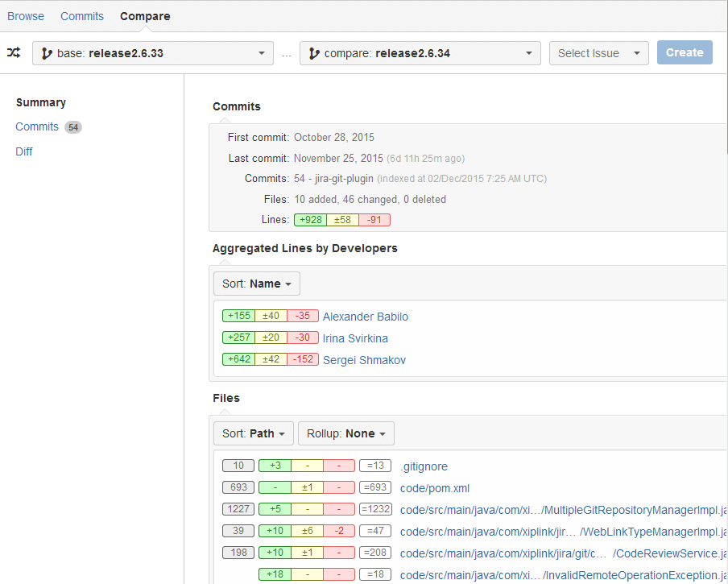Select or type an issue key on the Select Issue dropdown, since, every pull request should be associated with an issue. This will map the selected issue key to the new pull request.
Click Create Pull Request if you want to create a new pull request with the associated issue key. See section, Creating Pull Request, for detailed information on this process.
The Compare > Summary screen displays the Commits, Aggregated Lines by Developers and Files. Click on a file to view its code diff.
Click Commits on the sidebar to view the list of commits resulting from this compare. The adjacent figure indicates the number of commits associated to this compare.
Click Diff on the sidebar to view code diffs of the selected range of commits with the path and name of the affected files.
Enable/Disable Repository Browser via Repository Configuration
Go to
Administration > Add-ons >
Git Integration Plugin for JIRA > Git Repositories.
Click
Actions > Edit to modify required repository settings.
The Advanced setup screen for
configuring repositories is displayed.
Scroll down to the Repository Browser option.
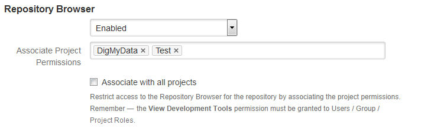Select Enabled to activate this function for this repository. Choose Disabled to deactivate this function from this repository.
Add one or more existing projects to associate to this git repository in the Associate Project Permissions field, in order to have Git Code Review and Git Commits tabs appear on the Issue screens of the specified projects.
Checking the Associate with all projects box will hide the existing associated projects in the Associate Project Permissions field and disable it. All existing associated projects in that field are still retained.
Click Update to save configuration changes for this repository.
Permissions Requirement to Display Commit Information
Users must have 'View Development Tools' permission in order to view commit information on the issue page.
The user needs to be in the developers group to view code diffs when default permission scheme is used.
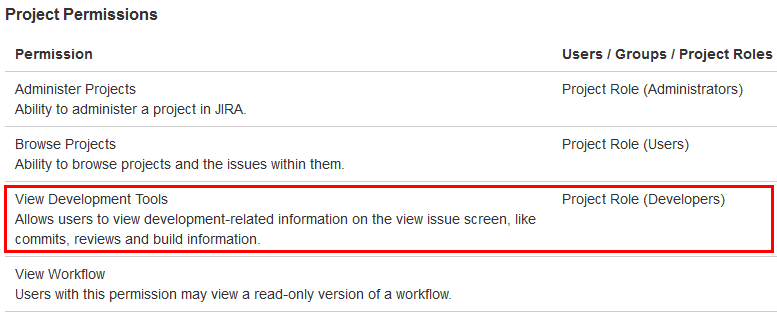
Consider the following criteria when setting permissions:
- Permission name may be different depending on your version of JIRA.
- Project permissions are configured on the project administration page. Different projects may have different permissions.
- Default permission scheme grants access to add-on to all members of administrators and developers groups. No additional configuration is required in this case.
Git User Identity
A git user can identify himself on his local computer using the following commands:
$ git config --global user.name "John Doe"$ git config --global user.email johndoe@example.com
Or, for specific repository:
$ git config user.name "John Doe"$ git config user.email johndoe@example.com
Then every commit is supported by the configured user information.
Hosting services (like GitHub and BitBucket, for example) try to match these data in commits with a particular account:
- If the email is unknown, it just displays the name from the commit. If there is no JIRA user associated with the email, the Git add-on will use the author's name from the commit and displays this name without any associated links. 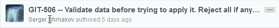
- If an email is configured in the local repository, the account is detected and will be displayed. The Git add-on will use the email from a commit and will search for a JIRA user using this email. If the JIRA user is found, the associated link to his JIRA profile is displayed with the accompanying JIRA avatar beside the name. 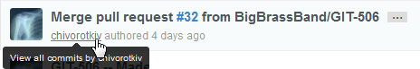
JIRA User Information Card
As of v2.6.5 of the Git add-on, the JIRA user card is available on the following screens:
- Git Commits tab (Commit author name)
- Git Code Review tab (Aggregated Lines by Developers)
- Repositories list (Last updated by)
- Repository Browser (under Latest commit column)
- Code diff dialog (Commit info)
Hover the mouse pointer on the name of the user. A small information box containing information such as email, zone & time and avatar for that user will appear.
Click Activity to view the latest activities performed by that user.
Click More > to open more options such as:
- view this user's profile,
- view unresolved issues currently assigned to this user, or
- go to the administration section for this user.
Viewing Commit Code Diffs
Access the commit code diff dialog via the following:
- View a file on the Repository Browser (Git > View All Repositories).
- On the Compare results screen of the Repository Browser, click a file on the Summary page.
- Go to Administration > Projects. Select a project. Select the Overview tab then click Git Commits. Click a file on a commit or click View full commit.
- Open an issue. Select the Git Roll Up tab then click a file under Files.
- Open an issue. Select the Git Commits tab then click a file or click View full commit.
- Open an issue. Select the Git Code Review tab then click the View Diff text link.

The Issue Tab
If the add-on is configured and licensed successfully, new tabs are added to each JIRA issue.
Git Code Review
Open an issue then go to the Git Code Review tab to view Git repository connection information and Compare > Summary of pull requests.
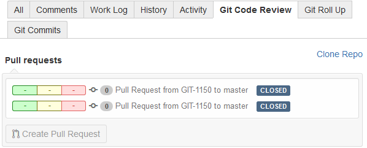The issue already have closed pull requests.
Based on the above example:
Click on the Clone Repo text link to open the Git Repository Connection Information dialog.
Click on the Pull Request from... text links to open the Compare > Summary page.
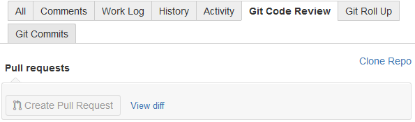The Create Pull Request button is disabled because the issue does not have any pull requests.
Based on the above example:
Click on the Clone Repo text link to open the Git Repository Connection Information dialog.
Click on the View diff text link to open the Compare > Summary page.
- the issue status must be:
Pre Code Review,Code Review. Your JIRA admin can change this status in settings. - the issue must be resolved. Your JIRA admin can change this status in settings.
- the issue must be resolved and the issue status must
be:
Pre Code Review,Code Review. Your JIRA admin can change this status in settings.
If the Create Pull Request option is available, clicking it will open the Create Pull Request dialog. After creating the pull request, the user will be taken to the Compare > Summary page. Select an available branch from the list then click Create Pull Request. For more information on this feature, see section - Creating Pull Requests.
Git Roll Up
Open an issue then go to the Git Roll Up tab to view commit statistics.
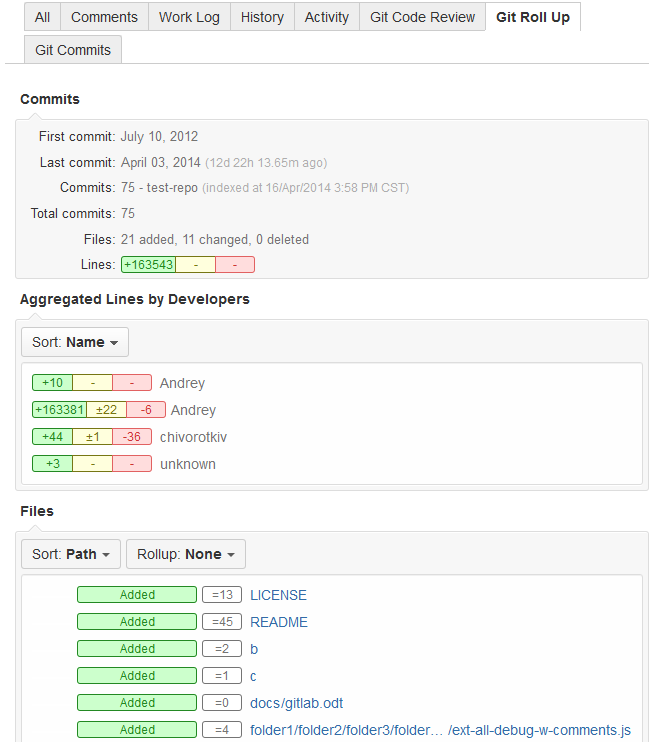This tab displays statistical information of the first and last revision of the commits and the time since the last commit was made. A summary of the files, lines and the developers who made the commit are also displayed.
Sort the code statistics by clicking the respective Sort button then selecting the required sorting option.
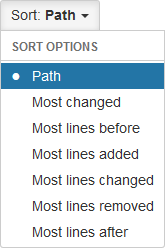Select roll up options by clicking the respective Rollup button:
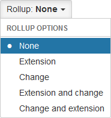
Git Commits
Open an issue then go to the Git Commits tab to view commit information:
| Information | Description |
|---|---|
| Repository/Indexed | Name of the repository (as in add-on config) and date of last synchronization with remote repo. |
| Author/Committer | User who performed the commit. Hover the mouse pointer on the name to view user card. |
| Issue key | This is the JIRA issue with the corresponding commit message. |
| Repository Name | This is the name of the repository the commit has been made. Click to browse this repository via Repository Browser. |
| Branch | Name of the Git branch. Click to view this branch via Repository Browser. |
| Commit UID | UID of the commit and git host link. Click the UID to view the code diffs for this commit. Click the git host link to view this commit via the git host server. |
| Files Changed | List of files affected by the commit. Click the file or git host link to view code diff of this commit. |
View code diff information of the particular file by clicking the filename for each file adjacent to the rollup counter markers.
Git Notes
Starting v2.6.21, the Git add-on displays git notes in the Git Commits tab:
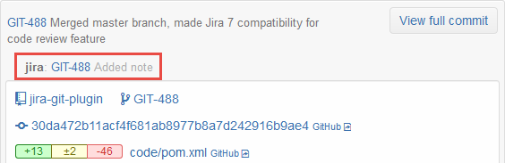For a git repository with several existing commits in it, commit authors can associate issue keys via git notes to these commits without having to edit the commit messages. The Git Integration for JIRA add-on will index issue keys in git notes.
Smart commit actions are also supported in git notes.
Each commit can only have one git note per namespace. There can be multiple note namespaces per commit. These note namespaces are automatically indexed.
Guidelines for adding new git notes:
- add git notes to new commits which has not been indexed yet;
- git notes can be added to old commits which is already indexed - but does not have an issue key.
FAQ > Reindex > How do I clear the Git Integration Plugin for JIRA cache manually? topic.
Adding a git note to an already reindexed commit:
git notes add -m 'TST-3 is also fixed' 107af254git show -s 107af254git push origin refs/notes/*
Code Syntax Highlighter
As of v2.5.5 of the Git Add-on, the code diff dialog view is improved. The Git add-on uses the correct syntax highlighting when viewing the code diff of the file based on its file extension:
| File Extension | Language ID |
|---|---|
| css | CSS |
| js | Javascript |
| cpp | C++ |
| cs | C# |
| sh | Bash |
| java | Java |
| sql | SQL |
| py | Phyton |
| rb | Ruby |
| php, phtml, php3, php4, php5 | PHP |
| html, html, xhtml, xml | Markup |
| c, h, m, mm, pl, pm | CLike |
The Projects Tab
The Projects tab allows you to manage project related options.
All Versions
History of commits can also be viewed within the whole project scope. To do this, select a project then click the Git Commits tab. The format of commits is similar to that on the ticket page.
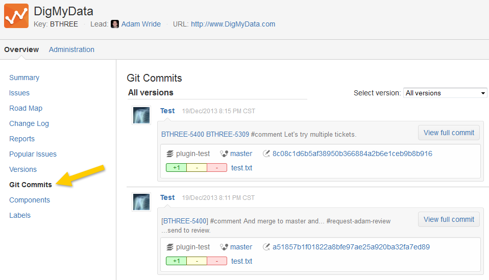
To view code diff information of the particular file, click the filename for each file adjacent to the rollup counter markers.
Click on the issue name of the commit to open it with the Repository Browser. Related commits for that issue name are displayed.
Click on a GUID name to open it with the Repository Browser. Related issues and commits for that GUID are displayed.
Commits for Select Version
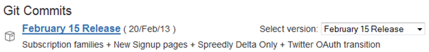
Commits can also be limited using a particular revision. Revision and commits are connected using the logic below:
- All tickets linked with particular revision are selected (using both 'fix version' and 'affects version' fields).
- Commits linked with these tickets are fetched.
Code Review Developer Panel
Git links are now available on the developer panel in the following screens:
- Issue page
- Search page in detailed view
- JIRA Agile screen
![[Git Source Code panel]](docimgs/image050.png)
The 236 commits refers to an existing Git Commits view, which the issue tab have now. Clicking this text link will reload the page and automatically selects the Git Commits tab to view the commits.
The Roll Up refers to an existing Git Roll Up view, which the issue tab have now. Clicking this link will reload the page and automatically selects the Git Roll Up tab to view the git code summary.
Click on the Clone Repository text link to open the Git Repository Connection
Information dialog.
This button is disabled, if there's no git pull request on the issue. If the Create Pull Request option is available, clicking it will open a Create Pull Request dialog. For more information on this feature, see section - Creating Pull Requests.
The Branches section lists the branches names, linking the selected branch to view via the Repository Browser. Only unmerged branches are shown here.
In Issue and Search pages, the code review panel is visible on the right pane:
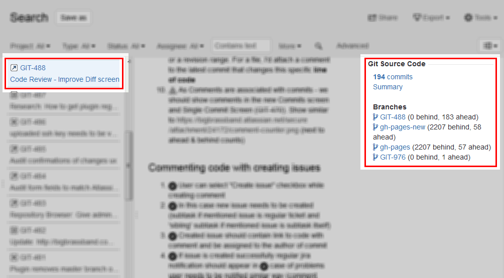In JIRA Agile screen, click on an issue on the board grid. Scroll down on the right pane to view the code review panel:
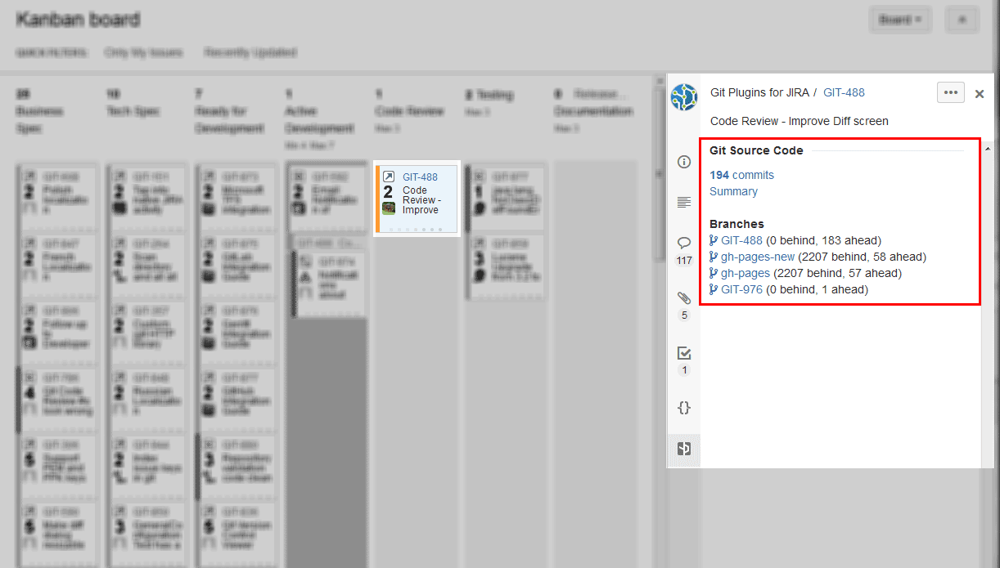The numbers ahead and behind represent the number of commits that are ahead/behind the main branch:
- Ahead – number of commits in the branch which are not merged to the master.
- Behind – number of commits in the master which are not merged to the branch.
Clicking on the branch text links will open that issue in the Repository Browser. If Repository Browser is disabled for this repository, the text links will be inactive.
Creating Pull Requests
This feature is accessible on the following locations:
- Issue page > Git Code Review
- Issue page > Code Developer Panel
As previously mentioned in the The Issue Tab > Git Code Review section, certain rules are required to be able to create a pull request:
- The issue status must be in Pre Code Review or Code Review; or
- The issue must be resolved; or
- The issue must be resolved and the issue status must be in Pre Code Review or Code Review.
Take note that your JIRA administrator can change this status in settings. Only JIRA issues with commits associated will show the "Create Pull Request" button.
When this option is available, clicking it will open the Create Pull Request dialog.
![[Create pull request dialog]](docimgs/create-pull-request-dlg.png)
You can select a Repository and Associated JIRA issue. BigBrassBand recommends to leave them as is.
Select Merge branch and Base branch to use. Usually, master is used as a Base branch.
Clicking Preview brings the user to the Compare tab showing the commit diff between the selected branches. Then, clicking Create Pull Request on the Compare tab will now create the pull request.
On the other hand, clicking Create Pull Request will create the pull request and brings the user to the Compare > Summary page:
![[Create pull request compare tab]](docimgs/create-pull-request-01.png)
Adding Code Review Comments
This feature allows developers to add comments to the code of the selected File on the Compare > Summary page.
Scroll down to the Files section then click a file to open its diff code dialog. As the mouse pointer is hovered on a line of code, a "plus" icon is shown to the left.
To add a code comment, click the "plus" icon for that line of code.
![[Add a code review]](docimgs/create-pull-request-02.png)
In the Comment box, type the desired comment with topics related to the selected line of code. The New issue option will let you automatically create a new subtask, if enabled.
Click Save comment to save the changes. The new comment is added below the selected line of code. Since the New issue option was selected, a new subtask GIT-1397 is also added.
![[Add code comment w/subtask]](docimgs/create-pull-request-03.png)
Other users can also respond to this comment by clicking this file and clicking Reply to respond to this comment. The commenter/reviewer has the option of creating a subtask via the code comment.
![[reply to code comment]](docimgs/create-pull-request-06.png)
Open that new subtask in a new browser tab/window to view its content. As shown in the screenshot below, GIT-979 main task now has a subtask called GIT-1397.
![[view new subtask]](docimgs/create-pull-request-04.png)
The Pull Request link is now displayed in the right sidebar of the Issue page:
![[pull request right sidebar]](docimgs/create-pull-request-05.png)
Clicking on the Pull Request link will open the Compare > Summary page for this pull request. With the pull request still open, the user can see the different stats (commits, files changed, etc.) and can add more code review comments or reply to the previous code comments.
Open the parent issue and check the Git Code Review tab for new updates on the pull request.
![[Issue git code review tab -
pull request update]](docimgs/create-pull-request-07.png)
To close the pull request, click Close Pull Request on the Compare > Summary page.
Reindexing
Synchronization between the repository and add-on will start automatically, however, reindexing may be required to manually start the synchronization process.
There are two ways to do this:
- To start update of all repositories, go to the Git Integration for JIRA add-on Git Repositories tab then click Reindex All button. Once synchronization is started, the progress will be displayed on this tab.
- If a specific repository needs to be synchronized, click the Action
icon then Reindex.
Click the view
icon to see the reindex progress of the selected repository.
Last Indexed Revision
The add-on stores the ID of the last indexed commit for each branch. This ID is used to limit the processed data upon reindex or update. This way, only new commits will be indexed on the next synchronization.
Click the Actions
icon then Reset to
reset the Last Indexed date. Perform this process whenever an
add-on is updated or re-installed.
Reindex and updatedDate Filter
The Git Add-on automatically changes the updatedDate of an issue when a Git commit is added to an issue upon reindex. When the reindex encounters a commit previously modified by the user relating to an issue, that issue will be updated.
You can enable or disable this setting in the Git Add-on General Settings screen.
JQL Searching
The Git Integration for JIRA add-on has added JQL operators and fields to query JIRA using JQL and git context via the JIRA search.
The JIRA JQL has been extended as follows:
| Criteria Name | JQL Field Syntax | Description | Search Result Value Example |
|---|---|---|---|
| Git Commits Referenced |
|
|
True or "" (emtpy string) |
| Git Branch | gitBranch in (Version-5.2, Version-5.3) | True for all issues referenced by a git commit in branch Version-5.2 and branch Version-5.3 | Version-5.2, Version-5.3 |
Examples:
- "gitBranch in (master) AND resolution = Unresolved"
- "gitCommitsReferenced is not empty AND resolution = Unresolved"
Webhooks
Trigger immediate reindex of your repositories from remote systems via webhooks. For
more information about this topic, see
About GitLab Webhooks
.
Go to
Administration > Add-ons >
Git Integration Plugin for JIRA > Web Hooks.

Enable/disable the webhook feature by clicking on the Enable webhook checkbox.
The Secret Key is a secure random-generated alphanumeric string at the time of the Git
add-on installation. The user can change this to a different value by generating
another secret token according to the Git host. Use this key in the form of
<JIRA_BASE_URL>/git/webhook/reindex/<SECRET_KEY> .
GET , POST , or
PUT and the webhooks are enabled.There will be no authentication checking and support for other HTTP methods such as
DELETE or HEAD . The
body of a POST or PUT is ignored.
JIRA High Availability and Clustering (Data Center compatibility)
As of v2.6.12 of the Git add-on, the Data Center version of JIRA is supported. JIRA 6.3 or higher is required for Data Center editions of JIRA.
ALTER DEFAULT PRIVILEGES IN SCHEMA public GRANT ALL PRIVILEGES ON tables TO jira1;ALTER DEFAULT PRIVILEGES IN SCHEMA public GRANT ALL PRIVILEGES ON tables TO jira2;ALTER DEFAULT PRIVILEGES IN SCHEMA public GRANT ALL PRIVILEGES ON sequences TO jira1;ALTER DEFAULT PRIVILEGES IN SCHEMA public GRANT ALL PRIVILEGES ON sequences TO jira2;
The configured repositories and indexes are located on the shared resource, since the nodes does not contain its own copy of the repositories.
The smart commits are processed by the reindex job which run once per cluster. The node updates the index during the scheduled reindex job.
The GarbageCollection job should be run once on one node at the same time.
Indexing triggers:
- Indexing is run on newly created repository on other nodes.
- Entries from index will be removed on other nodes.
- Reindex all repositories on other nodes when the reindex job is triggered.
Localization
Starting v2.6.25 of the Git add-on, unicode characters are now supported and displayed properly.
The following language localization for this add-on are available:
- German (starting v2.5.7)
- Polish (starting v2.6.30)
- French (starting v2.6.31)
- Russian (starting v2.6.31)
- Japanese (starting v2.6.38)
To switch to another language:
- Go to your User Profile.
- Under Preferences, click the icon.
- On the Update User Preferences screen, select one of the supported language from the list.
- Click Update to apply the new settings.
Upgrading from Old Versions of the Add-on
For Git add-on versions 1.0.3 and lower, you need to perform the following steps:
- Remove any repositories from the add-on configuration.
- Stop JIRA then remove old Git add-on from the JIRA plugin manager.
- Start JIRA then remove the add-on's Git Revision Indexing Service.
- Stop JIRA then remove old lucene indexes (
/var/jira/home/caches/indexes/plugins/jira-git-revisions). - Install the updated add-on (see Installation section for details) then restart JIRA.
- Verify that the add-on is enabled.
- Add repositories to the add-on configuration.
- Verify that each JIRA ticket has Git Commits and Git Code Review tabs.
- Verify that initial synchronization has completed.
Terms
Remote repository
Remote repository is the central hosting used by your team for pushing commits and pulling updates.
Local repository clone
Clone of remote repository is located on the same server as your JIRA service. It is cached locally for performance reasons and queried everytime the list of git commits is displayed.
Lucene indexes
Lucene is an index service within your JIRA
instance. It ships with JIRA and Git Integration for JIRA also makes use of it.
The add-on keeps a separate index stored in
'home/caches/indexes/plugins/jira-git-revisions'.
This database stores information about all commits (comment, author, etc) as well as the branch name which the commit belongs to.
GitRevisionIndexerJob
Revision indexer is the background job that is running within your JIRA instance. This background job is executed every several minutes (delay is configurable in the JIRA services configuration screen).
For every configured repository, this process do the following:
- Updates the local clone of repository
- Updates the lucene indexes with commits added recently
Licensing Notice
The Git Integration for JIRA add-on contains some code that covers this license:
Copyright (c) 2013, Atlassian Pty Ltd
All rights reserved.
Redistribution and use in source and binary forms, with or without
modification, are permitted provided that the following conditions are met:
- Redistributions of source code must retain the above copyright notice,
this list of conditions and the following disclaimer. - Redistributions in binary form must reproduce the above copyright notice,
this list of conditions and the following disclaimer in the documentation
and/or other materials provided with the distribution.
THIS SOFTWARE IS PROVIDED BY THE COPYRIGHT HOLDERS AND CONTRIBUTORS "AS IS" AND ANY EXPRESS OR IMPLIED WARRANTIES, INCLUDING, BUT NOT LIMITED TO, THE IMPLIED WARRANTIES OF MERCHANTABILITY AND FITNESS FOR A PARTICULAR PURPOSE ARE DISCLAIMED. IN NO EVENT SHALL THE COPYRIGHT HOLDER OR CONTRIBUTORS BE LIABLE FOR ANY DIRECT, INDIRECT, INCIDENTAL, SPECIAL, EXEMPLARY, OR CONSEQUENTIAL DAMAGES (INCLUDING, BUT NOT LIMITED TO, PROCUREMENT OF SUBSTITUTE GOODS OR SERVICES; LOSS OF USE, DATA, OR PROFITS; OR BUSINESS INTERRUPTION) HOWEVER CAUSED AND ON ANY THEORY OF LIABILITY, WHETHER IN CONTRACT, STRICT LIABILITY, OR TORT (INCLUDING NEGLIGENCE OR OTHERWISE) ARISING IN ANY WAY OUT OF THE USE OF THIS SOFTWARE, EVEN IF ADVISED OF THE POSSIBILITY OF SUCH DAMAGE.